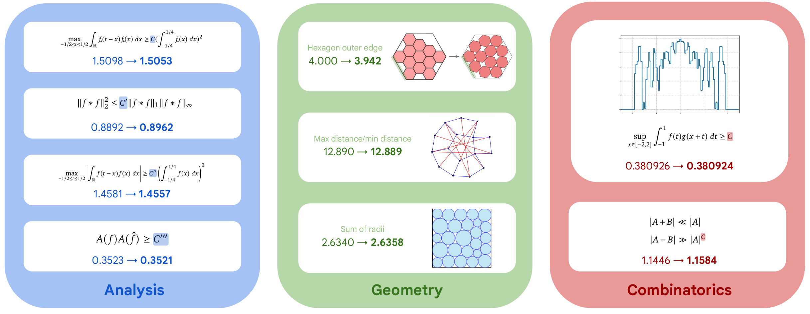
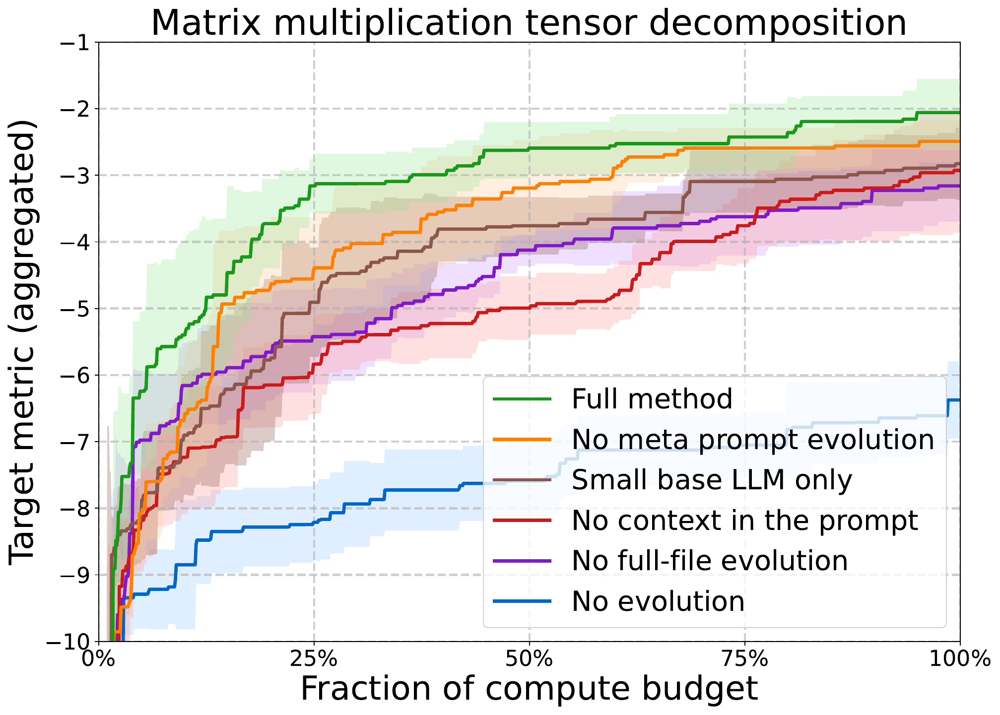

If a model can only suggest an algorithm that “looks promising,” it has not yet built a scientific discovery system. The harder loop is to turn the idea into runnable code, submit it to an evaluator, and let later search use both scores and failures to change the program. AlphaEvolve makes this loop an evolutionary coding agent.
This post reads AlphaEvolve: A coding agent for scientific and algorithmic discovery by Alexander Novikov, Ngân Vũ, Marvin Eisenberger, and colleagues (arXiv v1, 16 Jun 2025). The white paper presents a general evolutionary coding agent from Google DeepMind: LLM-generated diffs, automated evaluation, and a program database iteratively improve algorithms. Applications span matrix multiplication, mathematical constructions, and Google's computing infrastructure.
1. Topic: from code generation to verifiable algorithm discovery
A conventional coding agent receives a requirement and writes runnable code. Scientific and algorithmic discovery requires more: candidates must satisfy hard constraints, performance must be measurable in a real or simulated environment, improvements must generalize to unseen inputs, and an accidental high score must not be mistaken for new knowledge.
The field studies how to connect search, execution, verification, and explanation into a long-running loop. In automatically scorable problems, a program can be the candidate solution, the search policy, and the final deliverable. The evaluator turns “correct,” “faster,” or “more resource-efficient” into numerical feedback that guides new code structures.
2. Related work: from FunSearch to larger-scale code evolution
| Work | Main idea | What AlphaEvolve extends |
|---|---|---|
| Genetic programming | Hand-designed mutation and crossover operators evolve a program population | LLMs propose cross-function and cross-component changes from context |
| FunSearch | Evolves one Python function for mathematical constructions or heuristics | Evolves entire files, multiple languages, multiple objectives, and longer evaluations |
| AlphaTensor and specialized systems | Search is designed for a narrow problem such as matrix multiplication | Representation and evaluation become task-level configuration choices |
| AI research agents | Generate, rank, and discuss hypotheses in natural language | Executable programs serve as the intermediate representation, grounded by machine feedback |
AlphaEvolve does not replace natural-language research agents. It targets the implementation and algorithm-search stage, where a high-level idea can be expressed as code and tested repeatedly. It is best suited to mathematics, computer science, and systems optimization problems with reliable automatic evaluators.
3. Research questions: what does the system test?
Our reading organizes the questions as follows:
- Can an LLM modify a substantial codebase rather than being restricted to one short function or one language?
- Do an evolutionary database, rich context, meta-prompts, multi-objective scores, and a mixture of models each contribute?
- Can one loop handle mathematical constructions, algorithm discovery, and industrial compute-stack optimization?
- What evaluator and verification protocol can turn a high-scoring program into a trustworthy discovery?
4. Method: an asynchronous evolutionary loop centered on evaluation

Step 1: express the problem as a scorable code task
The user supplies an initial program, marks blocks that may evolve, and exposes an evaluate function. It receives the generated program and returns a dictionary of scalar metrics, conventionally maximized. The remaining code forms a fixed skeleton that invokes the evolving components and runs evaluation.
The representation is flexible. AlphaEvolve can evolve a candidate object directly, a function that constructs it, a search algorithm under a fixed compute budget, or both an intermediate solution and a searcher specialized for that solution. Different abstractions create different biases; constructive functions, for example, may favor symmetric solutions.
Step 2: sample rich prompts from a program database
The database stores programs, scores, and execution outputs. The prompt sampler selects several existing solutions and adds explicit context such as instructions, equations, code snippets, papers, or logs. It also supports stochastic templates, rendered evaluation results, and meta-prompts evolved in a separate database.
Instead of showing only the previous answer, this gives the model high-scoring programs, structural diversity, and failure feedback—a broader neighborhood for search.
Step 3: ask an ensemble of models for code diffs
AlphaEvolve asks the LLM to modify the current program using SEARCH/REPLACE diff blocks rather than returning an unalignable full file. The reported implementation mixes Gemini 2.0 Flash and Gemini 2.0 Pro: Flash increases candidate throughput, while Pro occasionally supplies higher-quality suggestions that can jump beyond a local optimum.
It can evolve hundreds of lines across multiple functions and languages. “Can modify” is not “will pass”: every diff must enter execution-based evaluation.
Step 4: cascade, parallelize, and combine evaluation metrics
New programs first run small, cheap tests; only promising candidates proceed to harder evaluation stages. This evaluation cascade prunes faulty programs early. Evaluators may return multiple scores—speed, quality, resource use, and stability—or call another LLM to grade properties such as simplicity that are difficult to formalize.
When one evaluation can consume about 100 compute-hours, independent random initializations or test shards are dispatched asynchronously to a cluster. Search speed is therefore jointly determined by candidate generation and evaluation throughput, not only by how many lines the LLM can write per second.
Step 5: return promising programs to evolutionary memory
Programs with scores and execution results enter the evolutionary database. It resurfaces promising ideas while preserving enough diversity that the search can continue rather than copying a single incumbent forever. The implementation is an asynchronous asyncio pipeline in which generation, evaluation, and database updates overlap.
5. Experiments and results: overall discoveries before component diagnosis
Main evaluation: mathematics, algorithms, and Google's compute stack
This white paper is not one benchmark but a set of real applications. AlphaEvolve is driven by automatic evaluators; discovered algorithms or heuristics are compared with prior best results, while selected engineering tasks add unseen data, real hardware, or human review.
| Setting | Task and evaluation | Main result |
|---|---|---|
| Matrix multiplication | Optimize tensor-decomposition rank, the number of scalar multiplications, while preserving exactness | Improves 14 matrix-multiplication targets; over characteristic 0, finds rank 48 for (4\times4) complex matrices, below recursive Strassen's 49 |
| Mathematical constructions | More than 50 open problems scored by formal properties of a construction | Matches the best known construction on about 75%; beats SOTA with provably better constructions on about 20% |
| Borg scheduling | Historical workload simulator for CPU/memory bin-packing heuristics, then recent unseen workloads | Deployment recovers about 0.7% of Google's fleet-wide compute resources that would otherwise be stranded |
| Gemini kernels | Minimize matrix-multiplication kernel runtime on real TPU shapes | 23% average kernel speedup and 1% lower total Gemini training time; optimization shrinks from months to days |
| TPU circuit | Optimize Verilog RTL with functional verification and designer review | Finds a simple redundant-bit removal and integrates it into a next-generation TPU design flow |
| Compiler-generated IR | Optimize XLA IR around FlashAttention, with randomized numerical checks | 32% faster kernel and 15% faster input/output preprocessing |
The matrix-multiplication result is the easiest algorithmic claim to audit: the search makes 15 cross-component mutations and eventually finds a rank-48 procedure for (4\times4) complex matrix multiplication. The mathematical summary indicates breadth, but “about 20% beats SOTA” is an aggregate across problems, not a success rate for independent natural-science experiments.

The engineering cases provide a more deployment-oriented evidence chain. The Borg heuristic is tested first in a simulator, then on recent unseen workloads, and finally rolled out fleet-wide, where the measured 0.7% resource recovery agrees with simulation. For Gemini kernels, half of the automatically collected real input shapes are used for evolution and half for evaluation, reducing the risk of scoring only on seen shapes. TPU and XLA tasks impose numerical or functional correctness as hard gates, so “how much faster” is reported together with “still correct.”

Supplementary analysis: which components make search effective?
On tensor decomposition and kissing-number lower bounds, the authors ablate the evolutionary database, explicit prompt context, meta-prompt evolution, full-file evolution versus loss-only evolution, and the mixture of powerful models versus a single small base model. Figure 8 plots average target performance as compute budget grows; shading is the across-target standard deviation averaged over three runs with different seeds.

The paper's overall conclusion is that every component contributes materially: evolutionary memory exposes and improves historical programs; explicit context supplies task structure and feedback; meta-prompts improve the prompts themselves; full-file evolution enables coordinated cross-function changes; and stronger models improve candidate quality. These ablations concern two representative tasks, not a causal decomposition of every engineering result.
6. Our reflections
Topic reflection: what is this field studying?
AlphaEvolve shows a clear division of labor for research agents: LLMs propose structured changes, execution accepts or rejects them, the database stores search memory, and evaluators turn “good” into a signal for the next round. It expands test-time compute from “generate more text” to “run more programs with feedback.”
The deeper contribution is the organization of candidate representation, automatic evaluation, and search budget into a sustainable discovery environment. For computable science, a reliable evaluator may set the ceiling before a more elaborate conversational planner does.
Limitation reflection: what remains unresolved?
First, the system depends on an automatable evaluator; many natural-science experiments still lack a cheap, repeatable simulator. Second, the applications come from Google's internal infrastructure and carefully selected mathematical tasks, so resources, engineering context, and expert validation are difficult to reproduce. Third, score-driven evolution can optimize a proxy, especially when objectives conflict or the evaluator is incomplete. Fourth, AlphaEvolve finds algorithms or heuristics, but the paper does not systematically explain how to distill code behavior into transferable scientific mechanisms.
Solution reflection: where could evaluation go next?
For the first issue, a high-level LLM could propose natural-language hypotheses and compile only the simulatable parts into evaluators, while explicitly recording the evidence missing from automated tests. For reproducibility, publish task specifications, initial programs, evaluators, search budgets, and complete candidate traces so method gains can be separated from infrastructure advantages. For proxy optimization, use hidden tests, adversarial evaluators, independent metrics, and human review, reporting the gap between optimized and real objectives. Finally, the system could generate invariants, proof sketches, and behavioral summaries that turn high-scoring code into knowledge researchers can understand, reuse, and transfer.
One-sentence takeaway: AlphaEvolve does not ask an LLM to write the right algorithm once; it makes code a mutable hypothesis, the evaluator a persistent feedback channel, and the evolutionary database long-term memory, scaling “generate–execute–select–generate” to mathematical and engineering improvements.
References: arXiv paper, HTML full text, mathematical-results Colab.